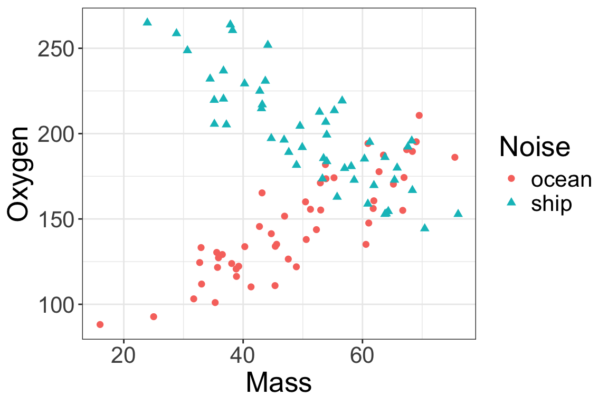
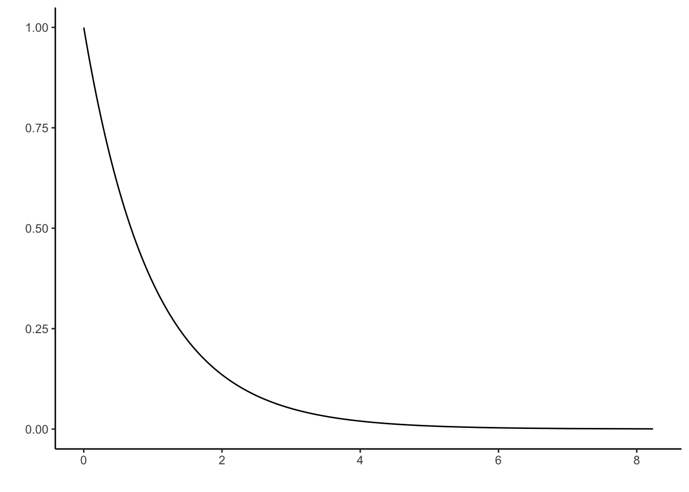

Exam 2 review questions
Below are questions to help you study for Exam 2. These are some examples of the kinds of questions I might ask.
- This is not a practice exam.
- The questions cover most, but not all, possible material for the exam.
- The distribution of questions here is not necessarily reflective of the distribution of questions on the actual exam.
Multiple choice questions
- Which of the following is the correct formula for \(R^2\)?
- \(R^2 = \dfrac{\sum \limits_{i=1}^n (y_i - \widehat{y}_i)^2}{\sum \limits_{i=1}^n (y_i - \overline{y})^2}\)
- \(R^2 = 1 - \dfrac{\sum \limits_{i=1}^n (y_i - \widehat{y}_i)^2}{\sum \limits_{i=1}^n (y_i - \overline{y})^2}\)
- \(R^2 = \dfrac{\frac{1}{n-p} \sum \limits_{i=1}^n (y_i - \widehat{y}_i)^2}{ \frac{1}{n-1} \sum \limits_{i=1}^n (y_i - \overline{y})^2}\)
- \(R^2 = 1 - \dfrac{\frac{1}{n-p} \sum \limits_{i=1}^n (y_i - \widehat{y}_i)^2}{ \frac{1}{n-1} \sum \limits_{i=1}^n (y_i - \overline{y})^2}\)
- \(R^2 = \dfrac{\frac{1}{p-1} \sum \limits_{i=1}^n (y_i - \widehat{y}_i)^2}{ \frac{1}{n-1} \sum \limits_{i=1}^n (y_i - \overline{y})^2}\)
- \(R^2 = 1 - \dfrac{\frac{1}{p-1} \sum \limits_{i=1}^n (y_i - \widehat{y}_i)^2}{ \frac{1}{n-p} \sum \limits_{i=1}^n (y_i - \overline{y})^2}\)
Solution: (b)
- Which of the following is the correct formula for \(R_{adj}^2\)?
- \(R_{adj}^2 = \dfrac{\sum \limits_{i=1}^n (y_i - \widehat{y}_i)^2}{\sum \limits_{i=1}^n (y_i - \overline{y})^2}\)
- \(R_{adj}^2 = 1 - \dfrac{\sum \limits_{i=1}^n (y_i - \widehat{y}_i)^2}{\sum \limits_{i=1}^n (y_i - \overline{y})^2}\)
- \(R_{adj}^2 = \dfrac{\frac{1}{n-p} \sum \limits_{i=1}^n (y_i - \widehat{y}_i)^2}{ \frac{1}{n-1} \sum \limits_{i=1}^n (y_i - \overline{y})^2}\)
- \(R_{adj}^2 = 1 - \dfrac{\frac{1}{n-p} \sum \limits_{i=1}^n (y_i - \widehat{y}_i)^2}{ \frac{1}{n-1} \sum \limits_{i=1}^n (y_i - \overline{y})^2}\)
- \(R_{adj}^2 = \dfrac{\frac{1}{p-1} \sum \limits_{i=1}^n (y_i - \widehat{y}_i)^2}{ \frac{1}{n-1} \sum \limits_{i=1}^n (y_i - \overline{y})^2}\)
- \(R_{adj}^2 = 1 - \dfrac{\frac{1}{p-1} \sum \limits_{i=1}^n (y_i - \widehat{y}_i)^2}{ \frac{1}{n-p} \sum \limits_{i=1}^n (y_i - \overline{y})^2}\)
Solution: (d)
- How are the \(F\) and \(t\) distributions related?
- If \(t \sim t_d\), then \(t^2 \sim F_{d, 1}\)
- If \(t \sim t_d\), then \(t^2 \sim F_{1, d}\)
- If \(F \sim F_{1,d}\) then \(F^2 \sim t_d\)
- If \(F \sim F_{d, 1}\) then \(F^2 \sim t_d\)
Solution: (b)
Short answer questions
- Can \(R^2\) decrease when additional variables are added to a model? Explain. What about \(R^2_{adj}\)?
Solution: \(R^2\) can never decrease when additional variables are added. Remember that we are estimating our linear model coefficients by minimizing the SSE. If adding additional variables can decrease the SSE even a little, then the \(R^2\) will increase. In the worst case, the SSE will stay exactly the same.
On the other hand, \(R^2_{adj}\) can decrease when variables are added, because it includes a penalty for the number of parameters in the model. If the additional variables do not add much to our ability to predict the response, then \(R^2_{adj}\) may decrease because the change in SSE does not outweigh the penalty for having additional parameters in the model.
- How should we handle potential outliers with a studentized residual \(< -3\) or \(> 3\)?
Solution:
- If the outliers are a clear error, or clearly come from a different population than the population of interest, then we can remove them from the data
- Otherwise, we fit the model both with and without the potential outliers, and report our conclusions with both models
- A multiple regression model has response \(Y\) and two quantitative explanatory variables, \(X_1\) and \(X_2\):
\[Y = \beta_0 + \beta_1 X_1 + \beta_2 X_2 + \varepsilon\] The sample correlation between \(X_1\) and \(X_2\) is \(r = 0.6\). Calculate the variance inflation factors (VIFs) for \(X_1\) and \(X_2\).
Solution: In this case, we have just two explanatory variables, so the VIF for both variables will be the same. The same correlation between \(X_1\) and \(X_2\) is \(r = 0.6\), so the coefficient of determination for predicting \(X_1\) from \(X_2\) (or vice-versa) is \(R^2 = r^2 = 0.36\). Then, \(VIF = 1/(1 - R^2) = 1/(1 - 0.36) = 1.56\)
- A multiple regression model has response \(Y\) and three quantitative explanatory variables, \(X_1\), \(X_2\), and \(X_3\):
\[Y = \beta_0 + \beta_1 X_1 + \beta_2 X_2 + \beta_3 X_3 + \varepsilon\]
The variance inflation factor (VIF) for \(X_1\) is 4. Calculate the \(R^2\) for the regression of \(X_1\) on \(X_2\) and \(X_3\).
Solution: \(VIF = 1/(1 - R^2)\). So, \(4 = 1/(1 - R^2)\), and solving for \(R^2\) we get \(R^2 = 0.75\).
- What is Simpson’s paradox?
Solution: The apparent relationship between variables changes when additional variables are included in the model
- What are some benefits of including multiple explanatory variables in a regression model?
Solution:
- Improve the ability to predict the response
- Account for other variables that may change the relationship
- True or False: any hypotheses which can be tested with a nested F-test (comparing full and reduced models) can also be tested with a t-test. Explain your answer.
Solution: False. A nested F-test compares nested (full and reduced) models. Written in terms of model parameters, this is equivalent to hypotheses like
\(H_0: \beta_1 = \beta_2 = \beta_3 = 0\)
(It doesn’t have to be three parameters tested, this is just an example). The key is that the null hypothesis is always about removing one or more terms from the model. If we are testing a single \(\beta\), then we can also do the test with a \(t\)-test. But we can’t use a \(t\)-test to simultaneously test multiple \(\beta\)s.
ANOVA table practice
The commonly accepted explanation for the extinction of the dinosaurs is a colossal asteroid strike. To support this hypothesis, we can look for iridium, a rare metal which is more common in asteroids, in rock samples. A sudden increase in iridium at some point in time supports the asteroid hypothesis.
We have data on 28 rock samples, recording the concentration of iridium (in ppb) for each sample, and the type of rock (Limestone or Shale). We use the model
\[Iridium = \beta_0 + \beta_1 IsShale + \varepsilon\]
We can use an ANOVA table to explore differences between these types of rock. Here is a partial ANOVA table for the model described above:
| Source | df | SS | MS | F |
|---|---|---|---|---|
| Model | 88363 | |||
| Residual | ||||
| Total | 1252331 |
- Fill in the remainder of the ANOVA table.
Solution:
| Source | df | SS | MS | F |
|---|---|---|---|---|
| Model | 1 | 88363 | 88363 | 1.97 |
| Residual | 26 | 1163968 | 44768 | |
| Total | 27 | 1252331 |
Example data questions
How does stress impact animals’ oxygen consumption? To investigate this question, biologists exposed 100 crabs to either 7.5 minutes of loud ship noise, or 7.5 minutes of normal ocean noise, and recorded their oxygen consumption. The data contain the following variables.
Mass: crab mass (g)Oxygen: rate of oxygen consumption (micromoles per hour)Noise: type of noise (eitheroceanorship)
The researchers are interested in the relationship between mass and oxygen consumption, and the impact of noise on this relationship. They make the following scatterplot:
They consider three different models for this relationship (\(\text{IsShip}\) is an indicator variable which is 1 for ship noise, and 0 for ocean noise):
\((1) \hspace{1cm} \text{oxygen} = \beta_0 + \beta_1 \text{mass} + \varepsilon\)
\((2) \hspace{1cm} \text{oxygen} = \beta_0 + \beta_1 \text{IsShip} + \beta_2 \text{mass} + \varepsilon\)
\((3) \hspace{1cm} \text{oxygen} = \beta_0 + \beta_1 \text{IsShip} + \beta_2 \text{mass} + \beta_3 \text{IsShip} \cdot \text{mass} + \varepsilon\)
The estimated equations for these models are
\((1) \hspace{1cm} \widehat{\text{oxygen}} = 161.29 + 0.23 \ \text{mass}\)
\((2) \hspace{1cm} \widehat{\text{oxygen}} = 143.72 + 53.68 \ \text{IsShip} + 0.05 \ \text{mass}\)
\((3) \hspace{1cm} \widehat{\text{oxygen}} = 52.06 + 257.38 \ \text{IsShip} + 1.92 \ \text{mass} - 4.05 \ \text{IsShip} \cdot \text{mass}\)
- Based on the scatterplot, which of these three models do you think is most appropriate? Explain your reasoning.
Solution: Model 3 is the most appropriate. From the scatterplot, we can see a clear difference in the slopes for the ocean vs. ship noise groups. The only way to allow a difference in the slope is to include an interaction term.
For each of the other two models, draw a scatterplot that would encourage you to choose that model, instead of the model selected in Question 12.
Using the estimated equation for the model you chose in question 12, what is the predicted rate of oxygen consumption for a 40g crab exposed to ocean noise? What about for a 40g crab exposed to ship noise?
Solution:
- 40g crab exposed to ocean noise: \(52.06 + 1.92\cdot40 = 128.86\)
- 40g crab exposed to ship noise: \(52.06 + 257.38 + (1.92 - 4.05)\cdot40 = 224.24\)
- What is the estimated change in oxygen consumption associated with a 1g increase in Mass, for crabs exposed to ship noise?
Solution: \(1.92 - 4.05 = -2.13\), so a 1g increase in Mass is associated with a decrease of 2.13 micromoles per hour in oxygen consumption, for crabs exposed to ship noise.
- The researchers want to test whether there is any relationship between ship noise and oxygen consumption, after accounting for mass. Write down a null and alternative hypothesis for this test, in terms of one or more parameters from the model.
Solution:
\[H_0: \beta_1 = \beta_3 = 0 \hspace{1cm} H_A: \text{at least one of } \beta_1, \beta_3 \neq 0\]
- What test can the researchers use to test their hypotheses? Explain your reasoning, and provide the degrees of freedom.
Solution: We are simultaneously testing more than one coefficient, so we need to use a nested F-test. Remember that the F distribution is parameterized by the numerator and denominator degrees of freedom. Here the numerator degrees of freedom is 2 (we are testing two parameters, \(\beta_1\) and \(\beta_3\)), and the denominator degrees of freedom is \(n - p = 100 - 4 = 96\) (where \(p\) is the number of parameters in the full model).
- Below are the ANOVA tables for the three fitted models. Use these tables to calculate a test statistic for the hypotheses in Question 16.
m1 <- lm(Oxygen ~ Mass, data = crabs)
anova(m1)Analysis of Variance Table
Response: Oxygen
Df Sum Sq Mean Sq F value Pr(>F)
Mass 1 895 894.52 0.5351 0.4662
Residuals 98 163817 1671.61 m2 <- lm(Oxygen ~ Mass + Noise, data = crabs)
anova(m2)Analysis of Variance Table
Response: Oxygen
Df Sum Sq Mean Sq F value Pr(>F)
Mass 1 895 895 0.9398 0.3347
Noise 1 71489 71489 75.1070 1.01e-13 ***
Residuals 97 92328 952
---
Signif. codes: 0 '***' 0.001 '**' 0.01 '*' 0.05 '.' 0.1 ' ' 1m3 <- lm(Oxygen ~ Mass*Noise, data = crabs)
anova(m3)Analysis of Variance Table
Response: Oxygen
Df Sum Sq Mean Sq F value Pr(>F)
Mass 1 895 895 3.2786 0.07332 .
Noise 1 71489 71489 262.0215 < 2e-16 ***
Mass:Noise 1 66135 66135 242.3981 < 2e-16 ***
Residuals 96 26192 273
---
Signif. codes: 0 '***' 0.001 '**' 0.01 '*' 0.05 '.' 0.1 ' ' 1Solution:
\[F = \dfrac{(SSE_{reduced} - SSE_{full})/(df_{reduced} - df_{full})}{SSE_{full}/df_{full}} = \dfrac{(163817 - 26192)/2}{26192/96} = 252.2\]
- Below is a picture of the distribution used to calculate a p-value with the test statistic in the previous question. Is the observed test statistic usual or unusual under the null hypothesis?

Solution: Very unusual
More data practice
A Saint Olaf College student, undertook a study of the archery scores of students at the college who were enrolled in an archery course. Students taking the course record a score for each day they attend class from the first until the last day. We have the following data for each student in the class:
Attendance: Number of days in classDay1: Archery score on first dayLastDay: Archery score on last day
The student fits the following regression model:
m_archery <- lm(LastDay ~ Day1 + Attendance, data = ArcheryData)
summary(m_archery) Estimate Std. Error
(Intercept) 113.1278 174.6178
Day1 0.7578 0.2046
Attendance -1.3973 7.9871
Multiple R-squared: 0.5127, Adjusted R-squared: 0.4477 - Interpret each of the coefficients in the fitted model, in context of the data.
Solution:
- The estimated score on the last day of class, for a student with a score of 0 on the first day and who never attended class, is 113.13
- We estimate that a one-point increase in archery score on the first day of class is associated with an average increase of 0.76 points in final day score, holding attendance constant
- We estimate that a one-day increase in attendance is associated with an average decrease of 1.40 points in final day score, holding first day score constant
- Interpret the \(R^2\) for the model.
Solution: About 51.3% of the variability in final day score is explained by the regression on first day score and attendance.
- Calculate and interpret a 97% confidence interval for the change in archery score on the last day associated with a 1-point increase in archery score on the first day, holding attendance fixed. The critical value is \(t^* = 2.40\).
Solution:
\(0.7578 \pm 2.40(0.2046) = (0.267, 1.249)\)
We are 97% confident that a 1-point increase in archery score is associated with an average increase in the last-day score of between 0.267 and 1.249 points, holding attendance fixed.